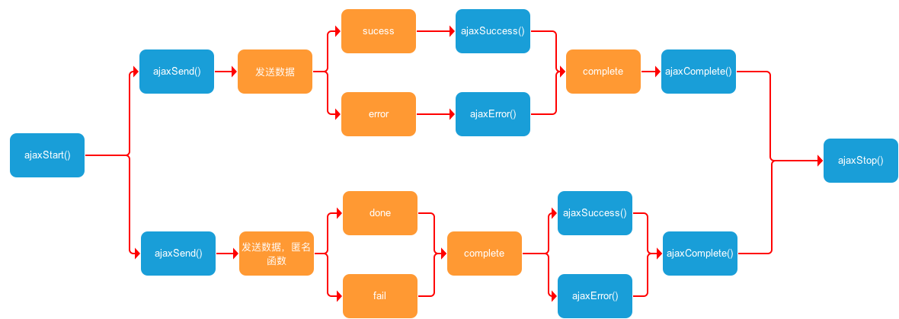
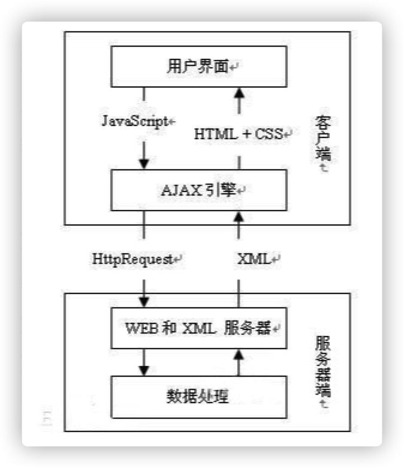
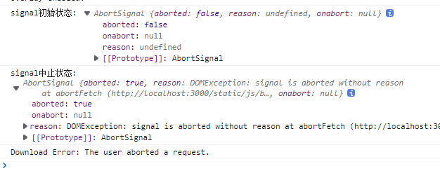
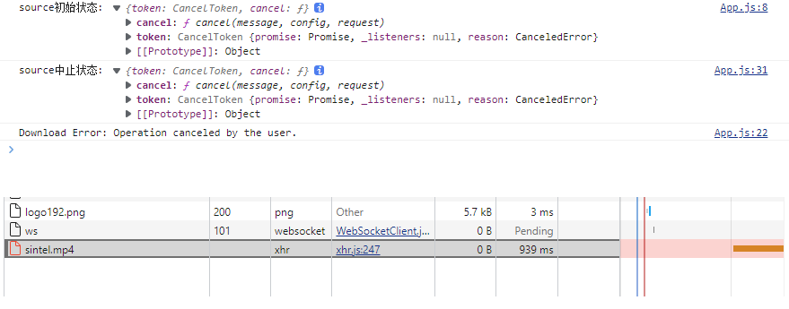
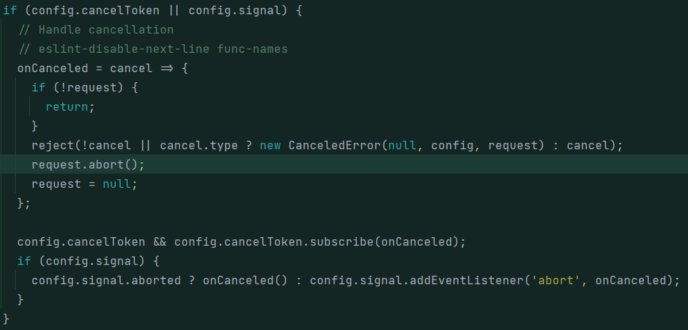

HTTP HTTP 协议 超文本传输协议 (HyperText Transfer Protocol) 规定了 Web 浏览器如何从 Web 服务器获取文档和向 Web 服务器提交表单内容，以及 Web 服务器如何响应这些请求和提交。通常，HTTP 并不在脚本的控制下，只是当用户单击链接，提交表单和输入 URL 时才发生。但是，用 JavaScript 代码操纵 HTTP 是可行的。
HTTP 请求
HTTP 请求方法或动作
正在请求的 URL
请求头集合，其中可能包含身份验证信息 (可选) – swagger
请求体 (可选) – 后台要不要参数
HTTP 响应
一个数字和文本组成的返回码，用来显示请求的成功和失败
一个响应头集合
响应体
AJAX 与 XMLHttpRequest AJAX AJAX 是异步的 JavaScript 和 XML;


XMLHttpRequest 浏览器在 XMLHttpRequest 类上定义了它们的 HTTP API,这个类的每个实例都表示一个独立的请求/响应对，并且这个对象的属性和方法允许指定请求细节和提取响应数据。在不重新加载整个网页的情况下，对网页的某部分进行更新 。目前所有浏览器都支持 XMLHttpRequest。
属性/方法
responseText：作为响应体返回的文本。
responseXML：如果响应的内容类型是 “text/xml” 或 “application/xml”，那就是包含响应数据的 XML DOM 文档。
status：响应的 HTTP 状态。
statusText：响应的 HTTP 状态描述。
readyState：返回 HTTP 请求状态
0 ：open() 尚未调用 UNSENT
1 ：open() 已调用 OPENED
2 ：接收到头信息 HEADERS_RECEIVED
3 ：接收到响应主体 LOADING
4 ：响应完成 DONE
readystatechange 请求状态改变事件
load 请求完成事件，减少了判断请求状态是否为完成的步骤，event.target 存放 xhr 对象
progress 请求进度事件，可用于查看请求进度，event.target 存放 xhr 对象，需在 send 之前添加
响应解码 MMIE-TYPE
MIME 类型为 text/plain、text/html、text/css 文本类型时，可以使用 responseText 属性解析
MIME 类型为 XML 文档类型时，使用 responseXML 属性解析
如果服务器发送对象、数组这样的结构化数据作为其响应，他应该传输 JSON 编码的字符串数据。通过 responseText 接受到它，可以把它传递给 JSON.parse() 方法来解析。
请求示例 1 2 3 4 5 6 7 8 9 10 11 12 13 14 15 16 17 18 19 const xhr = new XMLHttpRequest ();open ('get' , 'http://localhost:3000/' , true );setRequestHeader ('Content-Type' , 'multipart/form-data' );onreadystatechange = function (if (xhr.readyState === 4 && xhr.status === 200 ) {onload = function (e ) {const form = new FormData ();append ('token' , 'xxxxxx' );send ();
常用请求 使用 get 发送有参请求 1 2 3 4 5 6 7 8 9 10 11 12 13 14 15 16 17 18 19 20 21 <button onclick ="getRequest()" > Get</button > <script type ="text/javascript" > import qs from 'qs' ; function getRequest ( const xhr = new XMLHttpRequest (); xhr.open ('get' , 'https://localhost:3000?city=苏州&type=1' ); const params = { city : '苏州' , type : 1 , }; xhr.open ( 'get' , 'https://api.muxiaoguo.cn/api/tianqi?' + qs.stringify (params) ); xhr.send (); } </script >
用 post 发送有参请求 1 2 3 4 5 6 7 8 9 10 11 12 13 14 15 16 17 18 19 20 21 22 23 24 25 <button onclick ="getRequest()" > Post</button > <script > function getRequest ( const xhr = new XMLHttpRequest (); xhr.open ('post' , 'http://139.196.172.209:8888/user/login' ); const params = { password : '123321' , username : 'admin1' , }; xhr.onreadystatechange = function ( if (xhr.readyState === 4 && xhr.status === 200 ) { console .log (xhr.responseText ); } }; xhr.overrideMimeType ('text/xml' ); xhr.setRequestHeader ('Content-Type' , 'application/json;charset=utf-8' ); xhr.send (JSON .stringify (params)); } </script >
Fetch fetch(input,init)init ：
body，请求体内容。
cache，缓存操作，取值 。
credentials，外发请求时如何包含 cookie。
omit，不包含。
same-origin，同源时包含。
include，无论是否同源，都包含。
headers，请求头。
method，请求方法。
siginal，AbortController 实例。
发送文件 1 2 3 4 5 6 7 8 let form = new FormData ();let imageInput = document .querySelector ("input[type='file']" );append ('image' , imageInput.files [0 ]);fetch ('url' , {method : 'POST' ,body : form
加载 Blob 文件 1 2 3 4 5 6 7 const imageElement = document .querySelector ('img' )fetch ('my-image.png' )then ((response ) => response.blob ())then ((blob ) => {src = URL .createObjectURL (blob)
中断请求 通过 fetch 发送请求时，使用 AbortController API 中断发送的请求。
1 2 3 4 5 6 7 8 9 10 11 12 13 14 15 16 17 18 19 20 21 22 23 24 25 26 27 28 29 30 function App (const abortController = new AbortController ();let { signal } = abortController;console .log ("signal初始状态:" , signal);const fetchResource = (fetch ("https://mdn.github.io/dom-examples/abort-api/sintel.mp4" ,then ((response ) => {console .log (response);catch ((error ) => {console .log ("Download Error:" , error.message );const abortFetch = (abort ();console .log ("signal中止状态:" , signal);return (<> <button onClick ={() => fetchResource()}>发起请求</button > <button onClick ={() => abortFetch()}>中止请求</button > </>

上图中，AbortSignal 对象的 aborted 属性由初始时的 false 变成了中止后的 true 。
Headers 和 Map 很相似，都拥有 get()、set()、has()、delete() 等方法。
Request 和 Response 可以通过 Request 和 Response 构造函数创建实例，传递给 fetch 进行请求和响应。.text(),.json() 等)，否则会报错；根据 bodyUsed 判断是否已被读取或正在读取。.clone())。
Request 还可以给构造函数传入其他实例进行复制，但是会将传入实例 bodyUsed 设为 true，且两个对象不同源时会清除 referrer 属性，源对象 mode 为 navigator 时会变为 same-origin。
ReadableStream 主体
1 2 3 4 5 6 7 8 9 10 11 12 13 14 15 16 17 18 19 20 21 22 fetch ('https://fetch.spec.whatwg.org/' )then ((response ) => response.body )then ((body ) => {let reader = body.getReader ();function processNextChunk ({value, done} ) {if (done) {return ;console .log (value);return reader.read ()then (processNextChunk);return reader.read ()then (processNextChunk);
使用 async/await 进行读取。
1 2 3 4 5 6 7 8 9 10 11 12 13 14 15 16 17 18 fetch ('https://fetch.spec.whatwg.org/' )then ((response ) => response.body )then (async function (body ) {let reader = body.getReader ();let asyncIterable = {Symbol .asyncIterator ]() {return {next (return reader.read ();for await (let chunk of asyncIterable) {console .log (chunk);
使用生成器函数，支持读取部分流。
1 2 3 4 5 6 7 8 9 10 11 12 13 14 15 16 17 18 19 20 21 22 23 24 let decoder = new TextDecoder ();async function * streamGenerator (stream ) {const reader = stream.getReader ();try {while (true ) {const { value, done } = await reader.read ();if (done) {break ;yield value;finally {releaseLock ();fetch ('https://fetch.spec.whatwg.org/' )then ((response ) => response.body )then (async function (body ) {for await (let chunk of streamGenerator (body)) {console .log (decoder.decode (chunk,{stream :true }));
使用双流技术实时监测和操作流内容。
1 2 3 4 5 6 7 8 9 10 11 12 13 14 15 16 17 18 19 20 21 22 23 24 25 26 fetch ('https://fetch.spec.whatwg.org/' )then ((response ) => response.body )then ((body ) => {const reader = body.getReader ();return new ReadableStream ({async start (controller ) {try {while (true ) {const {value, done} = await reader.read ();if (done) {break ;enqueue (value);finally {close ();releaseLock ();then ((secondaryStream ) => new Response (secondaryStream))then (response =>text ())then (console .log );
Beacon 该 API 确保在 unload 事件触发后依然可以发送请求。
1 navigator.sendBeacon ('https://example.com/analytics-reporting-url' , '{foo: "bar"}' );
特性 ：
sendBeacon() 任何时候都可以使用。调用 sendBeacon() 后，浏览器会把请求添加到一个内部的请求队列。浏览器会主动地发送队列中的请求。
浏览器保证在原始页面已经关闭的情况下也会发送请求。
状态码、超时和其他网络原因造成的失败完全是不透明的，不能通过编程方式处理。
信标（beacon）请求会携带调用 sendBeacon() 时所有相关的 cookie。
Axios Axios 是一个基于 promise 的 HTTP 库，可以用在浏览器和 node.js 中。特性
从浏览器中创建 XMLHttpRequests
从 node.js 创建 http 请求
支持 Promise API
拦截请求和响应
转换请求数据和响应数据
自动转换 JSON 数据
安装 使用 npm
使用 cdn
1 <script src ="https://unpkg.com/axios/dist/axios.min.js" > </script >
发送请求 get 请求 步骤：
引入 axios
使用 axios.get 发送请求
不带参 axios.get(url)
带参 axios.get(url,{params:obj}) 参数携带在 url 后，作为查询字符串参数存在
接收响应
1 2 3 4 5 6 7 8 9 10 11 12 13 14 15 16 17 18 19 20 21 22 23 24 25 <div id="app" ><script > new Vue ({ el :"##app" , data ( return { list :[] } }, created ( this .findAllCategory () }, methods : { findAllCategory ( axios.get ('http://39.96.21.48:5588/category/findAll' ).then ((res )=> { console .log (res.data .data ) this .list = res.data .data }) } } }) </script >
post 请求 步骤：
引入 axios
使用 axios.post 发送请求
不带参 axios.post(url)
带参 axios.post(url,obj,{params:obj2}) 给后台的参数 obj 携带在请求体，给后台的参数 obj2 携带在 url 后
接收响应
1 2 3 4 5 6 7 8 9 10 11 12 13 14 15 16 17 18 19 20 21 22 23 24 25 26 27 28 29 <div id="app" ><script > new Vue ({ el :"##app" , data ( return { token :'' } }, created ( this .loginHandler () }, methods : { loginHandler ( let obj = { username :'admin' , type :'manager' , password :123321 } axios.post ('http://39.96.21.48:5588/user/login' ,obj).then ((res )=> { console .log (res.data .data ) this .token = res.data .data }) } } }) </script >
响应结构
1 2 3 4 5 6 7 8 9 10 11 12 13 14 15 16 17 {data : {},status : 200 ,statusText : 'OK' ,headers : {},config : {},
API 与请求配置 可以通过向 axios 传递相关配置来创建请求。axios(config)
1 2 3 4 5 6 7 8 9 10 11 12 13 14 15 16 17 18 19 20 21 22 23 24 25 {url : '/user' ,method : 'get' , headers : {'X-Requested-With' : 'XMLHttpRequest' },params : {ID : 12345 data : {firstName : 'Fred' timeout : 1000 ,
请求方法的 别名 （为方便起见，为所有支持的请求方法提供了别名）：
axios.request(config)axios.get(url[, config])axios.delete(url[, config])axios.head(url[, config])axios.options(url[, config])axios.post(url[, data[, config]])axios.put(url[, data[, config]])axios.patch(url[, data[, config]])
使用别名方法时， url、method、data 属性都不必在 config 中指定。
配置默认值 全局的 axios 默认值 1 2 3 axios.defaults .baseURL = 'https://api.example.com' ;defaults .headers .common ['Authorization' ] = AUTH_TOKEN ;defaults .headers .post ['Content-Type' ] = 'application/x-www-form-urlencoded'
自定义实例默认值 1 2 3 4 5 const instance = axios.create ({baseURL : 'https://api.example.com' defaults .headers .common ['Authorization' ] = AUTH_TOKEN ;
拦截器 在请求或响应被 then 或 catch 处理前拦截它们。一般可以用于对登录后获得的令牌 token 进行处理。
请求拦截器 是 倒序 执行的，响应拦截器 是 正序 执行的。
请求拦截器 1 2 3 4 5 6 7 8 9 10 11 12 interceptors .request .use (function (config ) {if (config.method == 'post' && config.url !== '/user/login' ) {data = qs.stringify (config.data );return config;function (error ) {return Promise .reject (error);
响应拦截器 1 2 3 4 5 6 7 8 9 10 11 12 13 14 15 interceptors .response .use (function (response ) {let res = {data : response.data .data ,status : response.data .status ,statusText : response.data .message ,return res;function (error ) {return Promise .reject (error);
移除拦截器 1 2 const myInterceptor = axios.interceptors .request .use (function (interceptors .request .eject (myInterceptor);
中断请求 AbortController
1 2 3 4 5 6 const controller=new AbortController ();get (url,{signal :controller.signal })then ((res )=> {console .log (res)});abort ()
CancelToken (已弃用)
1 2 3 4 5 6 7 8 9 10 11 12 13 14 15 16 17 18 19 20 21 22 23 24 25 26 27 28 29 30 31 32 33 34 35 36 37 function App (const CancelToken = axios.CancelToken ;const source = CancelToken .source ();console .log ("source初始状态:" , source);const fetchResource = (get ("[url]" , {cancelToken : source.token ,then ((response ) => {console .log (response);catch ((error ) => {if (axios.isCancel (error)) {console .log ("Download Error:" , error.message );else {console .log (error);const abortFetch = (cancel ("Operation canceled by the user." );console .log ("source中止状态:" , source);return (<> <button onClick ={() => fetchResource()}>发起请求</button > <button onClick ={() => abortFetch()}>中止请求</button > </>

source 只返回包含 cancel 和 token 的对象，无法判断请求是否中断，需要使用 axios 提供的 isCancel 方法判断。
axios 中断请求本质还是调用 abort() 来中断请求。

当调用 cancel 方法后，会立即执行 abort 方法取消请求，同时调用 reject 让外层的 promise 的 reject 执行。
跨源资源共享 CORS request Origin，携带发送的地址。response Access-Control-Allow-Origin，设置进行响应的地址。
跨域 XHR 对象 ：setRequestHeader() 设置自定义头部；
预检请求 ：request Origin：与简单请求相同。Access-Control-Request-Method：请求希望使用的方法。Access-Control-Request-Headers：（可选）要使用的逗号分隔的自定义头部列表。response Access-Control-Allow-Origin：与简单请求相同。Access-Control-Allow-Methods：允许的方法（逗号分隔的列表）。Access-Control-Allow-Headers：服务器允许的头部（逗号分隔的列表）。Access-Control-Max-Age：缓存预检请求的秒数。
凭据请求 ：request withCredentials=true，携带凭据（cookie、HTTP 认证和客户端 SSL 证书）。response Access-Control-Allow-Credentials: true，响应没有该头部时，浏览器不会把凭据交给 JavaScript（responseText 是空字符串，status 是 0，onerror() 被调用）。
替代性跨源技术 替代性跨源技术是 CORS 出现之前的实现方式，其不需要修改服务器。
图片探测 onload() 和 onerror() 知道什么时候接收响应，但只能发送 GET 请求且不能获得服务器响应内容。
1 2 3 4 5 let img = new Image ();onload = img.onerror = function (alert ('Done!' );src = 'http://www.example.com/test?name=lili' ;
JSONP <script> 能够不受限制从其他域加载资源。
1 2 3 4 5 6 7 function handleResponse (response ) {console .log (`You're at IP address ${response.ip} , which is in ${response.city} , ${response.region} ` );let script = document .createElement ('script' );src = 'http://freegeoip.net/json/?callback=handleResponse' ;document .body .insertBefore (script, document .body .firstChild );
参考 面试官：如何中断已发出去的请求？ - 掘金 (juejin.cn) (1条消息) axios.CancelToken_海绵杨宝宝的博客-CSDN博客_axios.canceltoken axios 之cancelToken原理以及使用 - 诗和远方-ysk - 博客园 (cnblogs.com)